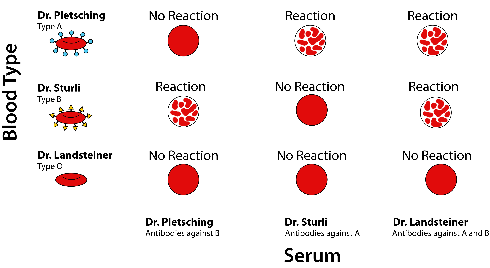
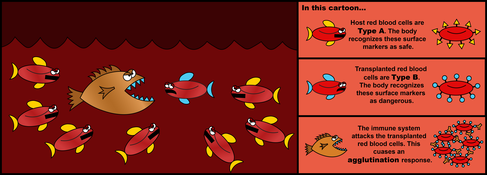

Written with StackEdit.
Written by Kyler Lugo Edited by Susanna Brantley Illustrated by Gillie Agmon
A few weeks ago, I realized I had no idea about one of the most basic aspects of my own body – my blood type. Sure, my parents or some computer database at my doctor’s office probably had it written down, but there was something about not knowing myself that bothered me. So I decided to take to the internet and end this question once and for all.
After a few clicks, ten dollars, and a couple of days later, I had it – a simple card with directions instructing me to place a drop of blood into four marked boxes (1). Questioning the simplicity, I followed along, smeared my blood, and then waited for whatever reaction was supposed to happen on the card. And, almost half a minute later, it was done. The results were obvious. I was B+.
Figuring out my blood type suddenly gave me a sense of relief. I could confidently tell family and even friends what kind of blood I would need if I ever found myself in a situation necessitating a transfusion. After figuring out my blood type, though, I realized I had further questions: How did the card work? What does B+ mean? And most importantly, who came up with this?
The answer? Arguably one of the greatest discoveries in modern medicine.
Though blood typing is considered to be one of the most basic procedures performed today, historically it’s a relatively new concept that originated with blood transfusions – the act of transferring blood from one person to another. Transfusions themselves are also considered relatively new, but only in the sense that their relative effectiveness and safeness is recent. While we take them for granted today, they were once considered not only a questionable technique, but practically unfeasible. Simply put, prior to the 20th century, transfusions either worked fantastically for the recipient or quickly led to one thing -- death.
The history of transfusions and the eventual discovery of blood types began at the start of the 1600s when Englishman William Harvey discovered that blood circulates via the heart and not the lungs (2). With this knowledge, physicians reasoned that transferring blood could be used to treat a wide variety of ailments such as blood loss due to childbirth or even mental insanity, and began experimenting with this idea with relative success.
While there are disputed reports that the first transfusion was performed on Pope Innocent VIII in 1492, who is said to have been given the blood of three boys to drink, the first documented account of the technique being performed is generally credited to physician Richard Lower (3). As a member in the Royal Society of London, Lower wrote that in 1665 he drained the blood of a dog “until its strength was nearly gone” and was able to reverse the effect by introducing blood from “the cervical artery of a fairly large mastiff” until the first dog was “overfilled . . . by the inflowing blood”. Though the first dog was exhausted, it eventually recovered without any notable difficulties (4).
After Lower’s procedure, physicians throughout England and France quickly began experimenting with human trials. Though there is some evidence of successful animal-to-human transfusions, such as by Dr. Jean-Baptiste Denis, who transferred small amounts of sheep blood into a boy, the practice immediately came under scrutiny after multiple physicians reported that, more often than not, patients who received a transfusion would die a few days later. In 1667, Denis himself was faced with a murder charge after he transferred lamb blood into a described “madman”. Though the man survived a previous transfusion, a second transfusion led to “pain in the kidneys, the next day the urine was dark, in fact black”. A third transfusion killed him (5).
Faced with a potential crisis, transfusions were quickly banned by the Royal Society in 1668 and were condemned by the medical profession (5). Though there were some additional experiments during the 1700s, the practice was virtually untouched until the 1800s when Dr. James Blundell proposed an alternative hypothesis as to why the earlier transfusions failed. Noting that the experiments in the 1600s showed that blood can be transferred between animals, he hypothesized that blood can only be shared between species – dog to dog, human to human.
As a result, Blundell performed the first successful human-to-human transfusion in 1818 to a patient suffering from childbirth-induced hemorrhaging, using the patient’s husband as a donor. Though he performed up to ten total transfusions in the years to follow, Blundell (as well as other physicians) quickly noticed that their success rates were random and, in some cases, outright abysmal (5, 6). While some patients responded exceedingly well, other patients would wind up dying within a few days.
After decades of low success rates, and dozens of dead patients, the mystery was solved in 1901 when Austrian physician Karl Landsteiner took samples of blood from six healthy scientists (including himself) and decided to see what would happen if they were mixed together in a test tube. While some of the samples didn’t react, he noticed that others would form clumps and agglutinate. More importantly, Landsteiner noted that if he took blood samples and spun out the red blood cells, it was the yellow phase of the blood (termed plasma) that contributed to this observation.
Diagramming the various combinations of people that he tested this observation with, Landsteiner ultimately came up with three groups of individuals that followed certain rules. If he mixed plasma from his colleague Dr. Pletsching with cells from Dr. Sturli, clumps formed. If he reversed the reaction and used plasma from Dr. Sturli with Dr. Pletsching’s cells, they also clumped. Labeling Pletsching’s plasma as A and Sturli’s as B, Landsteiner’s tested his own blood, and found something unique. If he mixed his own plasma with either Pletsching or Sturli’s cells, clumps would form. Their plasma, however, didn’t clump his blood cells. The difference? Landsteiner was in group C, which was later named group O (7). 
Landsteiner’s discovery was instrumental in the century to follow. By understanding the difference between blood groups A, B, O, and AB (which is unique in that AB plasma does not react to any group) in 1902, physicians were able to effectively and safely adopt blood transfusions as a routine procedure. After American Oswald Robertson demonstrated that transfusions could be performed with stored and refrigerated blood in 1916, use of transfusions increased dramatically. By the 1940s, hundreds of transfusions were performed daily, leading to the development of blood banks and voluntary blood draws. As an acknowledgement to his monumental contribution to medicine, Landsteiner was awarded the Nobel Prize in Physiology or Medicine in 1937.
Landsteiner’s discoveries continued in 1940, when he and colleague Alexander Wiener injected Rhesus monkey red blood cells into rabbits and isolated the serum from the rabbits. They discovered that some serum from rabbits strongly clumped rhesus monkey red blood cells, but others did not. Labeling this agglutinable factor Rh, their discovery became relevant when Philip Levine and Rufus Stetson discovered an unusual case of a woman who was admitted to a hospital for a stillbirth. While she needed a transfusion, her baby featured softened tissues as if it was soaked and macerated. When she was given blood from her spouse who had type O blood and should have been a universal donor, she worsened and further bled – both had mismatching Rh factors. Her baby, likewise, had a mismatching Rh factor (8).
Work didn’t stop with the identification of the Rh factor (which is noted by a + or – symbol) in 1940. Since Landsteiner’s discovery, scientists have discovered around 30 additional blood groups, of which the most important are the A/B/AB/O group and the Rh factor. While there is still much to be done in terms of understanding the significance of these factors and why they evolved, their discovery revolutionized modern medicine.
While there is still debate as to why we have blood types or their evolutionary significance, research into the immune system has allowed scientists to characterize what causes blood mismatching. Described as agglutinogens by Landsteiner in 1901, immunologists today understand that red bloods cells are capable of being decorated by various sugars, fats, or proteins that are present on the cell surface. These decorations, called “antigens”, are usually present due to genetics of an individual, with multiple genes often contributing. Under normal circumstances, a person’s immune system will recognize the antigens that are present on the red blood cells of that person as being safe and non-threatening – a process known as being tolerant. If blood from a different person is transferred and the blood doesn’t look familiar to the immune system, the immune system will view this blood as being a threat and mount a response against it. Under this situation, the immune system will try to destroy the foreign blood, which could lead to complications such as kidney failure, excessive clotting, shock, and/or death.
With regard to the A/B/AB/O system, a person with type A blood has type A antigens on their red blood cell surface. Their body will naturally make agglutinins called antibodies that view type B antigens as being foreign and bad. Conversely, a person with type B blood has type B antigen on their red blood cell surface. Their body will make antibodies that view type A antigens as foreign. People with type AB blood have both type A antigens and type B antigens. Their body doesn’t create antibodies against either of these decorations. Finally, for people with group O blood, their blood cells don’t feature A antigens or B antigens, but their body creates antibodies that view those two decorations as being foreign. For example, remember my blood type is B+. This means I can give blood to other Rh positive individuals with AB or B type, and if I ever need a transfusion, I can only receive blood from an B+, O+, or O- individual. 
Despite the fact my research into Karl Landsteiner began with not knowing my own blood type, I realized that the discovery of blood typing could be considered a classical example of a common theme in biology, medicine, and science itself -- failure often leads to discovery. Though understanding blood types revolutionized medicine, its discovery came with a cost. Prior to the 1900s, many people unfortunately died or were injured due to experimental transfusions. That said, transfusions today are not only reliable and safe, but have saved hundreds of thousands of lives. Whether to pursue something that has a high up-front cost with a potential for a massive payout in the future is an ethical dilemma scientific research faces as a regular occurrence. Obviously, there isn’t a correct answer. While controversial, researchers and the general public must reflect on the costs versus the potential benefits of such discoveries and consider what should be tolerated in the name of bettering the lives of future generations.
A timeline of the events leading up to the discovery of blood types can be found through the American Red Cross at: http://www.redcrossblood.org/learn-about-blood/history-blood-transfusion